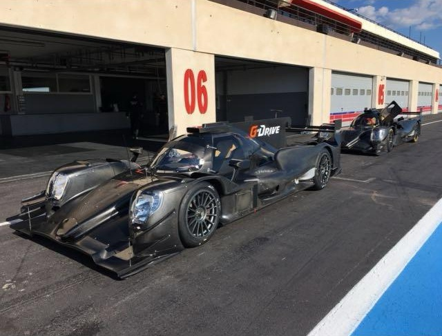

Mécanicien — Saison 2017
World Endurance Championship (WEC) — G-Drive Racing
Participation à la saison 2017 du WEC avec l’équipe G-Drive Racing, basée à Saint-Aunès (34), en tant que
Tire
Man.
Responsable de la préparation des pneumatiques et du refueling lors des pit stops.
Cette expérience a permis de travailler dans un environnement de compétition automobile de très haut niveau,
aux côtés d’équipes prestigieuses telles que Ferrari, Porsche et Toyota, renforçant réactivité, précision et
capacité à
performer sous pression.
Mécanique générale
Intervention dans différents ateliers de mécanique automobile et navale, pour contrôler,
réparer et
reconditionner les pièces.
Ces missions m'ont permis de développer un savoir-faire technique polyvalent et une grande rigueur dans le
diagnostic et
la résolution de problèmes mécaniques.

Auto-entrepreneur — Artisan du Bâtiment
Prise en charge de divers travaux de construction et rénovation, du second œuvre au gros œuvre, incluant
murs,
chapes, façades
terrassement... Ainsi que des travaux de paysagisme, plantations et entretien d’espaces verts, permettant de
développer
polyvalence, autonomie et expertise manuelle.